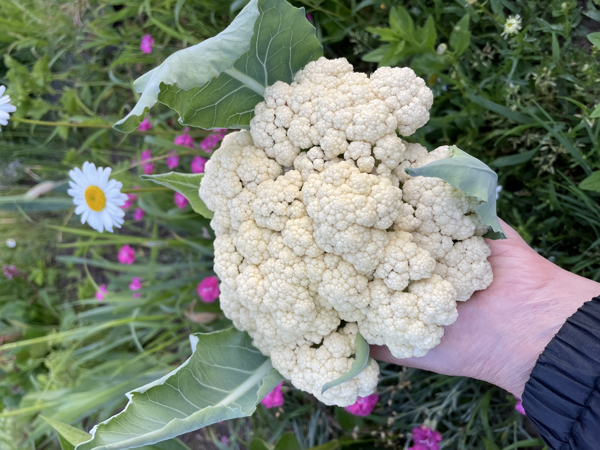

販売終了しました
申し訳ありませんが、現在キヌサヤエンドウの販売は終了しました。
他のおいしい野菜や商品をご覧いただけますので、ぜひご検討ください。
カリフラワー
カリフラワーは、白い花のついた野菜であり、さまざまな料理に活用できます。当店のカリフラワーは新鮮でクリーミーな味わいが特徴です。グリルやロースト、サラダ、スープなどにおすすめです。
特性
- 白くて美しい外観
- クリーミーで優しい風味
- さまざまな料理に使える多目的野菜
野菜の苗植え・収穫時期
カリフラワーの苗植えは春から夏にかけて行われます。収穫時期は苗植えから約2〜3か月後の夏から秋にかけてです。気候や栽培方法によっても収穫時期は異なる場合がありますので、詳細な時期は専門の農業資料などをご参考にしてください。
カリフラワーの写真

採れた日付: 2023年6月2日